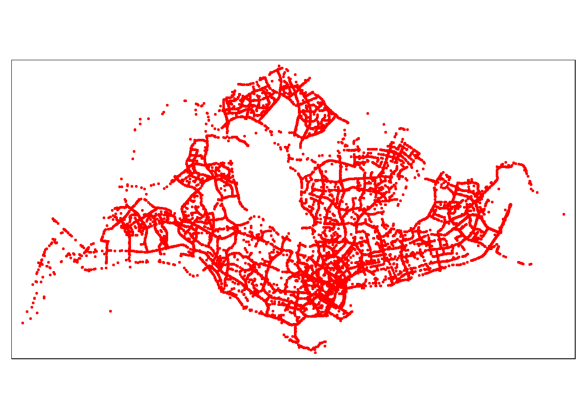

pacman::p_load(sp, sf, spNetwork, tmap, classInt, viridis, tidyverse, spatstat, sfdep, raster, maptools, arrow, lubridate)Take Home Exercise 1
1.0 Overview
1.1 Background
Human mobility, the movement of human beings in space and time, reflects the spatial-temporal characteristics of human behavior. With the advancement Information and Communication Technologies (ICT) especially smart phone, a large volume of data related to human mobility have been collected. By using appropriate GIS analysis methods, these data are potentially useful in supporting smart city planning and management.
In Singapore, one of the important source of data related to human mobility is from Land Transport Authority (LTA) DataMall. Two data sets related to human mobility are provided by the portal, they are: Passenger Volume by Origin Destination Train Stations and Passenger Volume by Origin Destination Bus Stops. One of the limitation of these data sets is that their location are biased to either bus stops or MRT/LRT stations. In 2020, another very interesting human mobility data set called Grab Posisi was released by GRAB, one of the largest shared taxi operator in South-east Asia. There are two data sets been released and one of them is for Singapore.
1.2 Objective
Geospatial analytics hold tremendous potential to address complex problems facing society. In this study, you are tasked to apply appropriate spatial point patterns analysis methods to discover the geographical and spatio-temporal distribution of Grab hailing services locations in Singapore.
#2.0 setup ## 2.1 The Task
The specific tasks of this take-home exercise are as follows:
Using appropriate function of sf and tidyverse, preparing the following geospatial data layer in sf tibble data.frames:
Grab taxi location points either by origins or destinations.
Road layer within Singapore excluding outer islands.
Singapore boundary layer excluding outer islands
Using the extracted data, derive traditional Kernel Density Estimation layers.
Using the extracted data, derive either Network Kernel Density Estimation (NKDE) or Temporal Network Kernel Density Estimation (TNKDE)
Using appropriate tmap functions, display the kernel density layers on openstreetmap of Singapore.
Describe the spatial patterns revealed by the kernel density maps.
2.2 Importing packages
The R packages used in this project are:
sf: a relatively new R package specially designed to import, manage and process vector-based geospatial data in R.
tidyverse: a family of other R packages for performing data science tasks such as importing, wrangling, and visualising data.
tmap: which provides functions for plotting cartographic quality static point patterns maps or interactive maps by using leaflet API.
maptools: which provides a set of tools for manipulating geographic data. In this hands-on exercise, we mainly use it to convert Spatial objects into ppp format of spatstat.
raster: which reads, writes, manipulates, analyses and model of gridded spatial data (i.e. raster). In this hands-on exercise, it will be used to convert image output generate by spatstat into raster format.
spatstat: which has a wide range of useful functions for point pattern analysis. In this hands-on exercise, it will be used to perform 1st- and 2nd-order spatial point patterns analysis and derive kernel density estimation (KDE) layer.
sfdep: for analysing spatial dependencies
2.3 Data import, preparation and storing into rds file
2.3.1 Importing boundary layer then converting into SVY21, CRS 3414 and storing into rds
#/ eval : False
mpsz_sf = st_read(dsn="data/geospatial", layer="MPSZ-2019")Reading layer `MPSZ-2019' from data source
`C:\AloysiusCedric\IS415-GAA\Take-home_Ex\Take-home_Ex01\data\geospatial'
using driver `ESRI Shapefile'
Simple feature collection with 332 features and 6 fields
Geometry type: MULTIPOLYGON
Dimension: XY
Bounding box: xmin: 103.6057 ymin: 1.158699 xmax: 104.0885 ymax: 1.470775
Geodetic CRS: WGS 84Check for invalid arguments
length(which(st_is_valid(mpsz_sf) == FALSE))[1] 6#/ eval : False
mpsz_sf <- st_make_valid(mpsz_sf)#/ eval : False
mpsz_sf <- st_transform(mpsz_sf,3414)#/ eval : False
st_crs(mpsz_sf)Coordinate Reference System:
User input: EPSG:3414
wkt:
PROJCRS["SVY21 / Singapore TM",
BASEGEOGCRS["SVY21",
DATUM["SVY21",
ELLIPSOID["WGS 84",6378137,298.257223563,
LENGTHUNIT["metre",1]]],
PRIMEM["Greenwich",0,
ANGLEUNIT["degree",0.0174532925199433]],
ID["EPSG",4757]],
CONVERSION["Singapore Transverse Mercator",
METHOD["Transverse Mercator",
ID["EPSG",9807]],
PARAMETER["Latitude of natural origin",1.36666666666667,
ANGLEUNIT["degree",0.0174532925199433],
ID["EPSG",8801]],
PARAMETER["Longitude of natural origin",103.833333333333,
ANGLEUNIT["degree",0.0174532925199433],
ID["EPSG",8802]],
PARAMETER["Scale factor at natural origin",1,
SCALEUNIT["unity",1],
ID["EPSG",8805]],
PARAMETER["False easting",28001.642,
LENGTHUNIT["metre",1],
ID["EPSG",8806]],
PARAMETER["False northing",38744.572,
LENGTHUNIT["metre",1],
ID["EPSG",8807]]],
CS[Cartesian,2],
AXIS["northing (N)",north,
ORDER[1],
LENGTHUNIT["metre",1]],
AXIS["easting (E)",east,
ORDER[2],
LENGTHUNIT["metre",1]],
USAGE[
SCOPE["Cadastre, engineering survey, topographic mapping."],
AREA["Singapore - onshore and offshore."],
BBOX[1.13,103.59,1.47,104.07]],
ID["EPSG",3414]]Extracting only the planning areas we want to study based on the population of the planning areas. For the purpose of this study, we will pick the planning areas where there are high densities of population. With this, more meaningful insights can be obtained.
We will be studying the planning area of Punggol, Woodlands, Yishun, Sengkang, Tampines, Bedok, Jurong West, Bukit Merah, Choa Chu Kang and Hougang
#/ eval : False
punggol = mpsz_sf[mpsz_sf$PLN_AREA_N == "PUNGGOL",]
woodlands = mpsz_sf[mpsz_sf$PLN_AREA_N == "WOODLANDS",]
yishun = mpsz_sf[mpsz_sf$PLN_AREA_N == "YISHUN",]
sengkang = mpsz_sf[mpsz_sf$PLN_AREA_N == "SENGKANG",]
tampines = mpsz_sf[mpsz_sf$PLN_AREA_N == "TAMPINES",]
bedok = mpsz_sf[mpsz_sf$PLN_AREA_N == "BEDOK",]
jurong_west = mpsz_sf[mpsz_sf$PLN_AREA_N == "JURONG WEST",]
bukit_merah = mpsz_sf[mpsz_sf$PLN_AREA_N == "BUKIT MERAH",]
choa_chu_kang = mpsz_sf[mpsz_sf$PLN_AREA_N == "CHOA CHU KANG",]
hougang = mpsz_sf[mpsz_sf$PLN_AREA_N == "HOUGANG",]
punggol = st_transform(punggol, crs = 3414)
woodlands = st_transform(woodlands, crs = 3414)
yishun = st_transform(yishun, crs = 3414)
sengkang = st_transform(sengkang, crs = 3414)
tampines = st_transform(tampines, crs = 3414)
bedok = st_transform(bedok, crs = 3414)
jurong_west = st_transform(jurong_west, crs = 3414)
bukit_merah = st_transform(bukit_merah, crs = 3414)
choa_chu_kang = st_transform(choa_chu_kang, crs = 3414)
hougang = st_transform(hougang, crs = 3414)
outer_island <- mpsz_sf[mpsz_sf$PLN_AREA_N == "SOUTHERN ISLANDS" | mpsz_sf$PLN_AREA_N == "NORTH-EASTERN ISLANDS" | mpsz_sf$PLN_AREA_N == "WESTERN ISLANDS",]
outer_island<- st_transform(outer_island, crs = 3414)
mpsz_sf <- st_difference(st_union(mpsz_sf),st_union(outer_island))Extracting only the borders of the planning areas we are studying
#/ eval : False
punggol = st_union(punggol)
woodlands = st_union(woodlands)
yishun = st_union(yishun)
sengkang = st_union(sengkang)
tampines = st_union(tampines)
bedok = st_union(bedok)
jurong_west = st_union(jurong_west)
bukit_merah = st_union(bukit_merah)
choa_chu_kang = st_union(choa_chu_kang)
hougang = st_union(hougang)Store mpsz layers into rds
#/ eval : False
write_rds(woodlands, "data/rds/woodlands.rds")
write_rds(yishun, "data/rds/yishun.rds")
write_rds(sengkang, "data/rds/sengkang.rds")
write_rds(tampines, "data/rds/tampines.rds")
write_rds(bedok, "data/rds/bedok.rds")
write_rds(jurong_west, "data/rds/jurong_west.rds")
write_rds(bukit_merah, "data/rds/bukit_merah.rds")
write_rds(choa_chu_kang, "data/rds/choa_chu_kang.rds")
write_rds(punggol, "data/rds/punggol.rds")
write_rds(hougang, "data/rds/hougang.rds")
write_rds(mpsz_sf, "data/rds/mpsz_sf.rds")2.3.2 Importing Grab Posisi Dataset
#/ eval : False
df <- read_parquet("data/GrabPosisi/part-00000-8bbff892-97d2-4011-9961-703e38972569.c000.snappy.parquet")2.3.3 Importing open street map data then converting into SVY21, CRS 3414
#/ eval : False
road = st_read(dsn="data/geospatial", layer="gis_osm_roads_free_1")Reading layer `gis_osm_roads_free_1' from data source
`C:\AloysiusCedric\IS415-GAA\Take-home_Ex\Take-home_Ex01\data\geospatial'
using driver `ESRI Shapefile'
Simple feature collection with 1765811 features and 10 fields
Geometry type: LINESTRING
Dimension: XY
Bounding box: xmin: 99.66041 ymin: 0.8021131 xmax: 119.2601 ymax: 7.514393
Geodetic CRS: WGS 84#/ eval : False
road = st_transform(road, 3414)#/ eval : False
st_crs(road)Coordinate Reference System:
User input: EPSG:3414
wkt:
PROJCRS["SVY21 / Singapore TM",
BASEGEOGCRS["SVY21",
DATUM["SVY21",
ELLIPSOID["WGS 84",6378137,298.257223563,
LENGTHUNIT["metre",1]]],
PRIMEM["Greenwich",0,
ANGLEUNIT["degree",0.0174532925199433]],
ID["EPSG",4757]],
CONVERSION["Singapore Transverse Mercator",
METHOD["Transverse Mercator",
ID["EPSG",9807]],
PARAMETER["Latitude of natural origin",1.36666666666667,
ANGLEUNIT["degree",0.0174532925199433],
ID["EPSG",8801]],
PARAMETER["Longitude of natural origin",103.833333333333,
ANGLEUNIT["degree",0.0174532925199433],
ID["EPSG",8802]],
PARAMETER["Scale factor at natural origin",1,
SCALEUNIT["unity",1],
ID["EPSG",8805]],
PARAMETER["False easting",28001.642,
LENGTHUNIT["metre",1],
ID["EPSG",8806]],
PARAMETER["False northing",38744.572,
LENGTHUNIT["metre",1],
ID["EPSG",8807]]],
CS[Cartesian,2],
AXIS["northing (N)",north,
ORDER[1],
LENGTHUNIT["metre",1]],
AXIS["easting (E)",east,
ORDER[2],
LENGTHUNIT["metre",1]],
USAGE[
SCOPE["Cadastre, engineering survey, topographic mapping."],
AREA["Singapore - onshore and offshore."],
BBOX[1.13,103.59,1.47,104.07]],
ID["EPSG",3414]]2.4 Extracting only the roads that have maxspeed value above 0, these will cover all SG roads while limiting the df size, then find the intersection of the roads with mpsz and then store into rds
#/ eval : False
road = road %>%
filter(maxspeed > 0)#/ eval : False
road = st_intersection(road, mpsz_sf)Warning: attribute variables are assumed to be spatially constant throughout
all geometriesStore road into rds
#/ eval : False
write_rds(road, "data/rds/road.rds")2.5 Extracting trip starting locations and destination locations, then storing into rds
Using the step learned in previous lesson,
Extracting trips’ origin locations.
derive three new columns (i.e. variables) for weekday, starting hour and day of the month.
name the output tibble date.frame.origin_df
#/ eval : False
df$pingtimestamp <- as_date(df$pingtimestamp)2.5.1 Extracting trip starting locations
#/ eval : False
origin_df <- df %>%
group_by(trj_id)%>% #group by trip id
arrange(pingtimestamp) %>% #arrange the pingtimestamp in ascending order
filter(row_number()==1) %>% #filter only taking the first row which is the start point (origin)
mutate(weekday = wday (pingtimestamp, label=TRUE, abbr=TRUE),
start_hr = factor(hour(pingtimestamp)),
day = factor(mday(pingtimestamp)))
View(origin_df)2.5.3 Convert origin_df into spatial dataframe
#/ eval : False
origin_df = origin_df %>%
st_as_sf(coords = c("rawlng", "rawlat"), crs = 4326) %>%
st_transform(3414)2.5.4 Extracting trip destination locations
#/ eval : False
destination_df <- df %>%
group_by(trj_id)%>% #group by trip id
arrange(desc(pingtimestamp)) %>% #arrange the pingtimestamp in descending order
filter(row_number()==1) %>% #filter only taking the first row which is the start point (destination)
mutate(weekday = wday (pingtimestamp, label=TRUE, abbr=TRUE),
end_hr = factor(hour(pingtimestamp)),
day = factor(mday(pingtimestamp)))
View(destination_df)2.5.5 Convert destination_df into spatial dataframe
#/ eval : False
destination_df = destination_df %>%
st_as_sf(coords = c("rawlng", "rawlat"), crs = 4326) %>%
st_transform(3414)2.5.6 Storing starting and ending destination into rds
#/ eval : False
write_rds(origin_df, "data/rds/origin_df.rds")
write_rds(destination_df, "data/rds/destination_df.rds")3.0 Project Initialisation
Reading the data dataset from rds files
mpsz_sf = read_rds("data/rds/mpsz_sf.rds")
woodlands = read_rds("data/rds/woodlands.rds")
yishun = read_rds("data/rds/yishun.rds")
sengkang = read_rds("data/rds/sengkang.rds")
tampines = read_rds("data/rds/tampines.rds")
bedok = read_rds("data/rds/bedok.rds")
jurong_west = read_rds("data/rds/jurong_west.rds")
bukit_merah = read_rds("data/rds/bukit_merah.rds")
choa_chu_kang = read_rds("data/rds/choa_chu_kang.rds")
punggol = read_rds("data/rds/punggol.rds")
hougang = read_rds("data/rds/hougang.rds")
bus_sf = read_rds("data/rds/bus_sf.rds")
origin_df = read_rds("data/rds/origin_df.rds")
road = read_rds("data/rds/road.rds")#4.0 Initial Visualisation
4.1 Boundary layer
tm_shape(mpsz_sf) +
tm_polygons()
4.2 road layer
tm_shape(mpsz_sf) +
tm_polygons(size=3) +
tm_shape(road) +
tm_lines(col = "yellow", size = 0.05) 4.3 Grab origin layer
tm_shape(origin_df) +
tm_dots(col = "red", size = 0.05)
5.0 Calculating the KDE of Grab Origin points
5.1 Converting the sf data frame into sp’s Spatial class
origin_sp = as_Spatial(origin_df)
mpsz_sp = as_Spatial(mpsz_sf)
woodlands_sp = as_Spatial(woodlands)
yishun_sp = as_Spatial(yishun)
sengkang_sp = as_Spatial(sengkang)
tampines_sp = as_Spatial(tampines)
bedok_sp = as_Spatial(bedok)
jurong_west_sp = as_Spatial(jurong_west)
bukit_merah_sp = as_Spatial(bukit_merah)
choa_chu_kang_sp = as_Spatial(choa_chu_kang)
punggol_sp = as_Spatial(punggol)
hougang_sp = as_Spatial(hougang)5.2 Converting the Spatial* class into generic sp format
origin_sp = as(origin_sp, "SpatialPoints")
mpsz_sp = as(mpsz_sp, "SpatialPolygons")
woodlands_sp = as(woodlands_sp, "SpatialPolygons")
yishun_sp = as(yishun_sp, "SpatialPolygons")
sengkang_sp = as(sengkang_sp, "SpatialPolygons")
tampines_sp = as(tampines_sp, "SpatialPolygons")
bedok_sp = as(bedok_sp, "SpatialPolygons")
jurong_west_sp = as(jurong_west_sp, "SpatialPolygons")
bukit_merah_sp = as(bukit_merah_sp, "SpatialPolygons")
choa_chu_kang_sp = as(choa_chu_kang_sp, "SpatialPolygons")
punngol_sp = as(punggol_sp, "SpatialPolygons")
hougang_sp = as(hougang_sp, "SpatialPolygons")5.3 Converting the generic sp format into spatstat’s ppp format
origin_ppp = as(origin_sp, "ppp")any(duplicated(origin_ppp))[1] FALSEVisualizing the origin_ppp
plot(origin_ppp)5.4 Creating owin object
When analysing spatial point patterns, it is a good practice to confine the analysis with a geographical area like Singapore boundary. In spatstat, an object called owin is specially designed to represent this polygonal region.
mpsz_owin = as(mpsz_sp, "owin")
woodlands_owin = as(woodlands_sp, "owin")
yishun_owin = as(yishun_sp, "owin")
sengkang_owin = as(sengkang_sp, "owin")
tampines_owin = as(tampines_sp, "owin")
bedok_owin = as(bedok_sp, "owin")
jurong_west_owin = as(jurong_west_sp, "owin")
bukit_merah_owin = as(bukit_merah_sp, "owin")
choa_chu_kang_owin = as(choa_chu_kang_sp, "owin")
punggol_owin = as(punggol_sp, "owin")
hougang_owin = as(hougang_sp, "owin")5.5 Combining the point events object and owin object
woodlands_origin_ppp = origin_ppp[woodlands_owin]
yishun_origin_ppp = origin_ppp[yishun_owin]
sengkang_origin_ppp = origin_ppp[sengkang_owin]
tampines_origin_ppp = origin_ppp[tampines_owin]
bedok_origin_ppp = origin_ppp[bedok_owin]
jurong_west_origin_ppp = origin_ppp[jurong_west_owin]
bukit_merah_origin_ppp = origin_ppp[bukit_merah_owin]
choa_chu_kang_origin_ppp = origin_ppp[choa_chu_kang_owin]
punggol_origin_ppp = origin_ppp[punggol_owin]
hougang_origin_ppp = origin_ppp[hougang_owin]5.6 Rescaling
woodlands_origin_ppp.km = rescale(woodlands_origin_ppp, 1000, "km")
yishun_origin_ppp.km = rescale(yishun_origin_ppp, 1000, "km")
sengkang_origin_ppp.km = rescale(sengkang_origin_ppp, 1000, "km")
tampines_origin_ppp.km = rescale(tampines_origin_ppp, 1000, "km")
bedok_origin_ppp.km = rescale(bedok_origin_ppp, 1000, "km")
jurong_west_origin_ppp.km = rescale(jurong_west_origin_ppp, 1000, "km")
bukit_merah_origin_ppp.km = rescale(bukit_merah_origin_ppp, 1000, "km")
choa_chu_kang_origin_ppp.km = rescale(choa_chu_kang_origin_ppp, 1000, "km")
punggol_origin_ppp.km = rescale(punggol_origin_ppp, 1000, "km")
hougang_origin_ppp.km = rescale(hougang_origin_ppp, 1000, "km")5.7 Visualising the study areas with origin points
plot(woodlands_origin_ppp.km, main="Woodlands")plot(yishun_origin_ppp.km, main="Yishun")plot(sengkang_origin_ppp.km, main="Sengkang")plot(tampines_origin_ppp.km, main="Tampines")
plot(bedok_origin_ppp.km, main="Bedok")plot(jurong_west_origin_ppp.km, main="Jurong West")plot(bukit_merah_origin_ppp.km, main="Bukit Merah")plot(choa_chu_kang_origin_ppp.km, main="Choa Chu Kang")plot(punggol_origin_ppp.km, main="Punggol")plot(hougang_origin_ppp.km, main="Hougang")6.0 First-order Spatial Point Patterns Analysis
6.1 Kernel Density Estimation (KDE)
6.1.1 Computing KDE for Woodlands
plot(density(woodlands_origin_ppp.km,
sigma=bw.diggle ,
edge=TRUE,
kernel="gaussian"),
main="Woodlands")
6.1.2 Computing KDE for Yishun
plot(density(yishun_origin_ppp.km,
sigma=bw.diggle,
edge=TRUE,
kernel="gaussian"),
main="Yishun")6.1.3 Computing KDE for Sengkang
plot(density(sengkang_origin_ppp.km,
sigma=bw.diggle,
edge=TRUE,
kernel="gaussian"),
main="Sengkang")
6.1.4 Computing KDE for Tampines
plot(density(tampines_origin_ppp.km,
sigma=bw.diggle,
edge=TRUE,
kernel="gaussian"),
main="Tampines")6.1.5 Computing KDE for Bedok
plot(density(bedok_origin_ppp.km,
sigma=bw.diggle,
edge=TRUE,
kernel="gaussian"),
main="Bedok")
6.1.6 Computing KDE for Jurong West
plot(density(jurong_west_origin_ppp.km,
sigma=bw.diggle,
edge=TRUE,
kernel="gaussian"),
main="Jurong West")
6.1.7 Computing KDE for Bukit Merah
plot(density(bukit_merah_origin_ppp.km,
sigma=bw.diggle,
edge=TRUE,
kernel="gaussian"),
main="Bukit Merah")6.1.8 Computing KDE for Choa Chu Kang
plot(density(choa_chu_kang_origin_ppp.km,
sigma=bw.diggle,
edge=TRUE,
kernel="gaussian"),
main="Choa Chu Kang")
6.1.9 Computing KDE for Punggol
plot(density(punggol_origin_ppp.km,
sigma=bw.diggle,
edge=TRUE,
kernel="gaussian"),
main="Punggol")6.1.10 Computing KDE for Hougang
plot(density(hougang_origin_ppp.km,
sigma=bw.diggle,
edge=TRUE,
kernel="gaussian"),
main="Hougang")6.1.11 Visualising all the kde
plot(density(woodlands_origin_ppp.km,
sigma=bw.diggle,
edge=TRUE,
kernel="gaussian"),
main="Woodlands")plot(density(yishun_origin_ppp.km,
sigma=bw.diggle,
edge=TRUE,
kernel="gaussian"),
main="Yishun")
plot(density(sengkang_origin_ppp.km,
sigma=bw.diggle,
edge=TRUE,
kernel="gaussian"),
main="Sengkang")plot(density(tampines_origin_ppp.km,
sigma=bw.diggle,
edge=TRUE,
kernel="gaussian"),
main="Tampines")
plot(density(bedok_origin_ppp.km,
sigma=bw.diggle,
edge=TRUE,
kernel="gaussian"),
main="Bedok")plot(density(jurong_west_origin_ppp.km,
sigma=bw.diggle,
edge=TRUE,
kernel="gaussian"),
main="Jurong West")
plot(density(bukit_merah_origin_ppp.km,
sigma=bw.diggle,
edge=TRUE,
kernel="gaussian"),
main="Bukit Merah")
plot(density(choa_chu_kang_origin_ppp.km,
sigma=bw.diggle,
edge=TRUE,
kernel="gaussian"),
main="Choa Chu Kang")
plot(density(punggol_origin_ppp.km,
sigma=bw.diggle,
edge=TRUE,
kernel="gaussian"),
main="Punggol")
plot(density(hougang_origin_ppp.km,
sigma=bw.diggle,
edge=TRUE,
kernel="gaussian"),
main="Hougang")
6.1.12 Storing the densities
woodlands_kde = density(woodlands_origin_ppp.km,
sigma=bw.diggle,
edge=TRUE,
kernel="gaussian")
yishun_kde = density(yishun_origin_ppp.km,
sigma=bw.diggle,
edge=TRUE,
kernel="gaussian")
sengkang_kde = density(sengkang_origin_ppp.km,
sigma=bw.diggle,
edge=TRUE,
kernel="gaussian")
tampines_kde = density(tampines_origin_ppp.km,
sigma=bw.diggle,
edge=TRUE,
kernel="gaussian")
bedok_kde = density(bedok_origin_ppp.km,
sigma=bw.diggle,
edge=TRUE,
kernel="gaussian")
jurong_west_kde = density(jurong_west_origin_ppp.km,
sigma=bw.diggle,
edge=TRUE,
kernel="gaussian")
bukit_merah_kde = density(bukit_merah_origin_ppp.km,
sigma=bw.diggle,
edge=TRUE,
kernel="gaussian")
choa_chu_kang_kde = density(choa_chu_kang_origin_ppp.km,
sigma=bw.diggle,
edge=TRUE,
kernel="gaussian")
punggol_kde = density(punggol_origin_ppp.km,
sigma=bw.diggle,
edge=TRUE,
kernel="gaussian")
hougang_kde = density(hougang_origin_ppp.km,
sigma=bw.diggle,
edge=TRUE,
kernel="gaussian")6.2 Converting KDE output into grid object. The result is the same, we just convert it so that it is suitable for mapping purposes
gridded_woodlands_kde <- as.SpatialGridDataFrame.im(woodlands_kde)
gridded_yishun_kde <- as.SpatialGridDataFrame.im(yishun_kde)
gridded_sengkang_kde <- as.SpatialGridDataFrame.im(sengkang_kde)
gridded_tampines_kde <- as.SpatialGridDataFrame.im(tampines_kde)
gridded_bedok_kde <- as.SpatialGridDataFrame.im(bedok_kde)
gridded_jurong_west_kde <- as.SpatialGridDataFrame.im(jurong_west_kde)
gridded_bukit_merah_kde <- as.SpatialGridDataFrame.im(bukit_merah_kde)
gridded_choa_chu_kang_kde <- as.SpatialGridDataFrame.im(choa_chu_kang_kde)
gridded_punggol_kde <- as.SpatialGridDataFrame.im(punggol_kde)
gridded_hougang_kde <- as.SpatialGridDataFrame.im(hougang_kde)kde_woodlands_raster <- raster(gridded_woodlands_kde)
kde_yishun_raster <- raster(gridded_yishun_kde)
kde_sengkang_raster <- raster(gridded_sengkang_kde)
kde_tampines_raster <- raster(gridded_tampines_kde)
kde_bedok_raster <- raster(gridded_bedok_kde)
kde_jurong_west_raster <- raster(gridded_jurong_west_kde)
kde_bukit_merah_raster <- raster(gridded_bukit_merah_kde)
kde_choa_chu_kang_raster <- raster(gridded_choa_chu_kang_kde)
kde_punggol_raster <- raster(gridded_punggol_kde)
kde_hougang_raster <- raster(gridded_hougang_kde)projection(kde_woodlands_raster) <- CRS("+init=EPSG:3414")
projection(kde_yishun_raster) <- CRS("+init=EPSG:3414")
projection(kde_sengkang_raster) <- CRS("+init=EPSG:3414")
projection(kde_tampines_raster) <- CRS("+init=EPSG:3414")
projection(kde_bedok_raster) <- CRS("+init=EPSG:3414")
projection(kde_jurong_west_raster) <- CRS("+init=EPSG:3414")
projection(kde_bukit_merah_raster) <- CRS("+init=EPSG:3414")
projection(kde_choa_chu_kang_raster) <- CRS("+init=EPSG:3414")
projection(kde_punggol_raster) <- CRS("+init=EPSG:3414")
projection(kde_hougang_raster) <- CRS("+init=EPSG:3414")tm_shape(mpsz_sf) +
tm_polygons()tm_shape(kde_woodlands_raster) +
tm_raster("v") +
tm_layout(legend.position = c("right", "bottom"), frame = FALSE)Variable(s) "v" contains positive and negative values, so midpoint is set to 0. Set midpoint = NA to show the full spectrum of the color palette.tm_shape(kde_yishun_raster) +
tm_raster("v") +
tm_layout(legend.position = c("right", "bottom"), frame = FALSE) Variable(s) "v" contains positive and negative values, so midpoint is set to 0. Set midpoint = NA to show the full spectrum of the color palette.tm_shape(kde_sengkang_raster) +
tm_raster("v") +
tm_layout(legend.position = c("right", "bottom"), frame = FALSE) Variable(s) "v" contains positive and negative values, so midpoint is set to 0. Set midpoint = NA to show the full spectrum of the color palette.tm_shape(kde_tampines_raster) +
tm_raster("v") +
tm_layout(legend.position = c("right", "bottom"), frame = FALSE) Variable(s) "v" contains positive and negative values, so midpoint is set to 0. Set midpoint = NA to show the full spectrum of the color palette.tm_shape(kde_bedok_raster) +
tm_raster("v") +
tm_layout(legend.position = c("right", "bottom"), frame = FALSE) Variable(s) "v" contains positive and negative values, so midpoint is set to 0. Set midpoint = NA to show the full spectrum of the color palette.tm_shape(kde_jurong_west_raster) +
tm_raster("v") +
tm_layout(legend.position = c("right", "bottom"), frame = FALSE) Variable(s) "v" contains positive and negative values, so midpoint is set to 0. Set midpoint = NA to show the full spectrum of the color palette.tm_shape(kde_bukit_merah_raster) +
tm_raster("v") +
tm_layout(legend.position = c("right", "bottom"), frame = FALSE) Variable(s) "v" contains positive and negative values, so midpoint is set to 0. Set midpoint = NA to show the full spectrum of the color palette.tm_shape(kde_choa_chu_kang_raster) +
tm_raster("v") +
tm_layout(legend.position = c("right", "bottom"), frame = FALSE) Variable(s) "v" contains positive and negative values, so midpoint is set to 0. Set midpoint = NA to show the full spectrum of the color palette.tm_shape(kde_punggol_raster) +
tm_raster("v") +
tm_layout(legend.position = c("right", "bottom"), frame = FALSE) Variable(s) "v" contains positive and negative values, so midpoint is set to 0. Set midpoint = NA to show the full spectrum of the color palette.tm_shape(kde_hougang_raster) +
tm_raster("v") +
tm_layout(legend.position = c("right", "bottom"), frame = FALSE) Variable(s) "v" contains positive and negative values, so midpoint is set to 0. Set midpoint = NA to show the full spectrum of the color palette.7.0 Network Constrained Spatial Point Patterns Analysis (NKDE)
# i want to change the geometry type of the road to LINESTRINGS
road = st_cast(road, "LINESTRING")Warning in st_cast.MULTILINESTRING(X[[i]], ...): keeping first linestring only
Warning in st_cast.MULTILINESTRING(X[[i]], ...): keeping first linestring only
Warning in st_cast.MULTILINESTRING(X[[i]], ...): keeping first linestring only
Warning in st_cast.MULTILINESTRING(X[[i]], ...): keeping first linestring only
Warning in st_cast.MULTILINESTRING(X[[i]], ...): keeping first linestring only
Warning in st_cast.MULTILINESTRING(X[[i]], ...): keeping first linestring only
Warning in st_cast.MULTILINESTRING(X[[i]], ...): keeping first linestring only
Warning in st_cast.MULTILINESTRING(X[[i]], ...): keeping first linestring onlystr(road)Classes 'sf' and 'data.frame': 76993 obs. of 11 variables:
$ osm_id : chr "4386520" "4887867" "8096835" "9584642" ...
$ code : int 5113 5122 5113 5115 5113 5122 5113 5113 5113 5113 ...
$ fclass : chr "primary" "residential" "primary" "tertiary" ...
$ name : chr "Orchard Road" "Hougang Avenue 1" "Scotts Road" "Keng Lee Road" ...
$ ref : chr NA NA NA NA ...
$ oneway : chr "F" "B" "F" "F" ...
$ maxspeed: int 50 50 60 50 60 50 50 50 50 50 ...
$ layer : num 0 0 0 0 0 0 0 0 0 0 ...
$ bridge : chr "F" "F" "F" "F" ...
$ tunnel : chr "F" "F" "F" "F" ...
$ geometry:sfc_LINESTRING of length 76993; first list element: 'XY' num [1:2, 1:2] 27638 27643 32038 32035
- attr(*, "sf_column")= chr "geometry"
- attr(*, "agr")= Factor w/ 3 levels "constant","aggregate",..: NA NA NA NA NA NA NA NA NA NA
..- attr(*, "names")= chr [1:10] "osm_id" "code" "fclass" "name" ...7.1 North Region Network Constrained KDE (NetKDE) Analysis
7.1.1 Preparing the road layer
#/ eval : False
woodlands_road = st_intersection(road, woodlands)Warning: attribute variables are assumed to be spatially constant throughout
all geometriesyishun_road = st_intersection(road, yishun)Warning: attribute variables are assumed to be spatially constant throughout
all geometriessengkang_road = st_intersection(road, sengkang)Warning: attribute variables are assumed to be spatially constant throughout
all geometriestampines_road = st_intersection(road, tampines)Warning: attribute variables are assumed to be spatially constant throughout
all geometriesbedok_road = st_intersection(road, bedok)Warning: attribute variables are assumed to be spatially constant throughout
all geometriesjurong_west_road = st_intersection(road, jurong_west)Warning: attribute variables are assumed to be spatially constant throughout
all geometriesbukit_merah_road = st_intersection(road, bukit_merah)Warning: attribute variables are assumed to be spatially constant throughout
all geometrieschoa_chu_kang_road = st_intersection(road, choa_chu_kang)Warning: attribute variables are assumed to be spatially constant throughout
all geometriespunggol_road = st_intersection(road, punggol)Warning: attribute variables are assumed to be spatially constant throughout
all geometrieshougang_road = st_intersection(road, hougang)Warning: attribute variables are assumed to be spatially constant throughout
all geometriesStoring the specific roads into rds
#/ eval : False
write_rds(woodlands_road, "data/rds/woodlands_road.rds")
write_rds(yishun_road, "data/rds/yishun_road.rds")
write_rds(sengkang_road, "data/rds/sengkang_road.rds")
write_rds(tampines_road, "data/rds/tampines_road.rds")
write_rds(bedok_road, "data/rds/bedok_road.rds")
write_rds(jurong_west_road, "data/rds/jurong_west_road.rds")
write_rds(bukit_merah_road, "data/rds/bukit_merah_road.rds")
write_rds(choa_chu_kang_road, "data/rds/choa_chu_kang_road.rds")
write_rds(punggol_road, "data/rds/punggol_road.rds")
write_rds(hougang_road, "data/rds/hougang_road.rds")Reading the roads from rds
woodlands_road = read_rds("data/rds/woodlands_road.rds")
yishun_road = read_rds("data/rds/yishun_road.rds")
sengkang_road = read_rds("data/rds/sengkang_road.rds")
tampines_road = read_rds("data/rds/tampines_road.rds")
bedok_road = read_rds("data/rds/bedok_road.rds")
jurong_west_road = read_rds("data/rds/jurong_west_road.rds")
bukit_merah_road = read_rds("data/rds/bukit_merah_road.rds")
choa_chu_kang_road = read_rds("data/rds/choa_chu_kang_road.rds")
punggol_road = read_rds("data/rds/punggol_road.rds")
hougang_road = read_rds("data/rds/hougang_road.rds")7.1.2 Preparing the lixels objects
Before computing NetKDE, the SpatialLines object need to be cut into lixels with a specified minimal distance. This task can be performed by using with lixelize_lines() of spNetwork as shown in the code chunk below.
The distance of 200m and a minimal distance of 100m because grab hailing services are usually called within 100m distance
woodlands_road = st_cast(woodlands_road, "LINESTRING")
yishun_road = st_cast(yishun_road, "LINESTRING")Warning in st_cast.MULTILINESTRING(X[[i]], ...): keeping first linestring only
Warning in st_cast.MULTILINESTRING(X[[i]], ...): keeping first linestring only
Warning in st_cast.MULTILINESTRING(X[[i]], ...): keeping first linestring onlysengkang_road = st_cast(sengkang_road, "LINESTRING")Warning in st_cast.MULTILINESTRING(X[[i]], ...): keeping first linestring only
Warning in st_cast.MULTILINESTRING(X[[i]], ...): keeping first linestring only
Warning in st_cast.MULTILINESTRING(X[[i]], ...): keeping first linestring onlytampines_road = st_cast(tampines_road, "LINESTRING")Warning in st_cast.MULTILINESTRING(X[[i]], ...): keeping first linestring onlybedok_road = st_cast(bedok_road, "LINESTRING")Warning in st_cast.MULTILINESTRING(X[[i]], ...): keeping first linestring onlyjurong_west_road = st_cast(jurong_west_road, "LINESTRING")Warning in st_cast.MULTILINESTRING(X[[i]], ...): keeping first linestring onlybukit_merah_road = st_cast(bukit_merah_road, "LINESTRING")
choa_chu_kang_road = st_cast(choa_chu_kang_road, "LINESTRING")Warning in st_cast.MULTILINESTRING(X[[i]], ...): keeping first linestring onlypunggol_road = st_cast(punggol_road, "LINESTRING")
hougang_road = st_cast(hougang_road, "LINESTRING")Warning in st_cast.MULTILINESTRING(X[[i]], ...): keeping first linestring only
Warning in st_cast.MULTILINESTRING(X[[i]], ...): keeping first linestring only
Warning in st_cast.MULTILINESTRING(X[[i]], ...): keeping first linestring only
Warning in st_cast.MULTILINESTRING(X[[i]], ...): keeping first linestring onlywoodlands_road_lixels = lixelize_lines(woodlands_road, 200, mindist = 100)
yishun_road_lixels = lixelize_lines(yishun_road, 200, mindist = 100)
sengkang_road_lixels = lixelize_lines(sengkang_road, 200, mindist = 100)
tampines_road_lixels = lixelize_lines(tampines_road, 200, mindist = 100)
bedok_road_lixels = lixelize_lines(bedok_road, 200, mindist = 100)
jurong_west_road_lixels = lixelize_lines(jurong_west_road, 200, mindist = 100)
bukit_merah_road_lixels = lixelize_lines(bukit_merah_road, 200, mindist = 100)
choa_chu_kang_road_lixels = lixelize_lines(choa_chu_kang_road, 200, mindist = 100)
punggol_road_lixels = lixelize_lines(punggol_road, 200, mindist = 100)
hougang_road_lixels = lixelize_lines(hougang_road, 200, mindist = 100)7.1.3 Generating line centre points
samples_woodlands <- lines_center(woodlands_road_lixels)
samples_yishun <- lines_center(yishun_road_lixels)
samples_sengkang <- lines_center(sengkang_road_lixels)
samples_tampines <- lines_center(tampines_road_lixels)
samples_bedok <- lines_center(bedok_road_lixels)
samples_jurong_west <- lines_center(jurong_west_road_lixels)
samples_bukit_merah <- lines_center(bukit_merah_road_lixels)
samples_choa_chu_kang <- lines_center(choa_chu_kang_road_lixels)
samples_punggol <- lines_center(punggol_road_lixels)
samples_hougang <- lines_center(hougang_road_lixels)The points are located at center of the line based on the length of the line.
7.1.4 Calculating the NetKDE (NKDE)
Retrieving only the origins that resides in the specific planning area
origin_df_woodlands = st_intersection(origin_df, woodlands)Warning: attribute variables are assumed to be spatially constant throughout
all geometriesorigin_df_yishun = st_intersection(origin_df, yishun)Warning: attribute variables are assumed to be spatially constant throughout
all geometriesorigin_df_sengkang = st_intersection(origin_df, sengkang)Warning: attribute variables are assumed to be spatially constant throughout
all geometriesorigin_df_tampines = st_intersection(origin_df, tampines)Warning: attribute variables are assumed to be spatially constant throughout
all geometriesorigin_df_bedok = st_intersection(origin_df, bedok)Warning: attribute variables are assumed to be spatially constant throughout
all geometriesorigin_df_jurong_west = st_intersection(origin_df, jurong_west)Warning: attribute variables are assumed to be spatially constant throughout
all geometriesorigin_df_bukit_merah = st_intersection(origin_df, bukit_merah)Warning: attribute variables are assumed to be spatially constant throughout
all geometriesorigin_df_choa_chu_kang = st_intersection(origin_df, choa_chu_kang)Warning: attribute variables are assumed to be spatially constant throughout
all geometriesorigin_df_punggol = st_intersection(origin_df, punggol)Warning: attribute variables are assumed to be spatially constant throughout
all geometriesorigin_df_hougang = st_intersection(origin_df, hougang)Warning: attribute variables are assumed to be spatially constant throughout
all geometriesDrop redundant columns
# Specify the columns you want to keep
columns_to_keep <- c("trj_id", "geometry")
# Use subset to filter specific columns
origin_df_woodlands_filtered <- origin_df_woodlands[, columns_to_keep]
origin_df_yishun_filtered <- origin_df_yishun[, columns_to_keep]
origin_df_sengkang_filtered <- origin_df_sengkang[, columns_to_keep]
origin_df_tampines_filtered <- origin_df_tampines[, columns_to_keep]
origin_df_bedok_filtered <- origin_df_bedok[, columns_to_keep]
origin_df_jurong_west_filtered <- origin_df_jurong_west[, columns_to_keep]
origin_df_bukit_merah_filtered <- origin_df_bukit_merah[, columns_to_keep]
origin_df_choa_chu_kang_filtered <- origin_df_choa_chu_kang[, columns_to_keep]
origin_df_punggol_filtered <- origin_df_punggol[, columns_to_keep]
origin_df_hougang_filtered <- origin_df_hougang[, columns_to_keep]# i want to calculate the nkde using the samples and the origin_df
#/ eval : False
densities_woodlands <- nkde(woodlands_road,
events = origin_df_woodlands_filtered,
w = rep(1,nrow(origin_df_woodlands_filtered)),
samples = samples_woodlands,
kernel_name = "quartic",
bw = 300,
div= "bw",
method = "simple",
digits = 1,
tol = 1,
grid_shape = c(1,1),
max_depth = 8,
agg = 5, #we aggregate events within a 5m radius (faster calculation)
sparse = TRUE,
verbose = FALSE)#/ eval : False
densities_yishun <- nkde(yishun_road,
events = origin_df_yishun_filtered,
w = rep(1,nrow(origin_df_yishun_filtered)),
samples = samples_yishun,
kernel_name = "quartic",
bw = 300,
div= "bw",
method = "simple",
digits = 1,
tol = 1,
grid_shape = c(1,1),
max_depth = 8,
agg = 5, #we aggregate events within a 5m radius (faster calculation)
sparse = TRUE,
verbose = FALSE)#/ eval : False
densities_sengkang <- nkde(sengkang_road,
events = origin_df_sengkang_filtered,
w = rep(1,nrow(origin_df_sengkang_filtered)),
samples = samples_sengkang,
kernel_name = "quartic",
bw = 300,
div= "bw",
method = "simple",
digits = 1,
tol = 1,
grid_shape = c(1,1),
max_depth = 8,
agg = 5, #we aggregate events within a 5m radius (faster calculation)
sparse = TRUE,
verbose = FALSE)#/ eval : False
densities_tampines <- nkde(tampines_road,
events = origin_df_tampines_filtered,
w = rep(1,nrow(origin_df_tampines_filtered)),
samples = samples_tampines,
kernel_name = "quartic",
bw = 300,
div= "bw",
method = "simple",
digits = 1,
tol = 1,
grid_shape = c(1,1),
max_depth = 8,
agg = 5, #we aggregate events within a 5m radius (faster calculation)
sparse = TRUE,
verbose = FALSE)#/ eval : False
densities_bedok <- nkde(bedok_road,
events = origin_df_bedok_filtered,
w = rep(1,nrow(origin_df_bedok_filtered)),
samples = samples_bedok,
kernel_name = "quartic",
bw = 300,
div= "bw",
method = "simple",
digits = 1,
tol = 1,
grid_shape = c(1,1),
max_depth = 8,
agg = 5, #we aggregate events within a 5m radius (faster calculation)
sparse = TRUE,
verbose = FALSE)#/ eval : False
densities_jurong_west <- nkde(jurong_west_road,
events = origin_df_jurong_west_filtered,
w = rep(1,nrow(origin_df_jurong_west_filtered)),
samples = samples_jurong_west,
kernel_name = "quartic",
bw = 300,
div= "bw",
method = "simple",
digits = 1,
tol = 1,
grid_shape = c(1,1),
max_depth = 8,
agg = 5, #we aggregate events within a 5m radius (faster calculation)
sparse = TRUE,
verbose = FALSE)#/ eval : False
densities_bukit_merah <- nkde(bukit_merah_road,
events = origin_df_bukit_merah_filtered,
w = rep(1,nrow(origin_df_bukit_merah_filtered)),
samples = samples_bukit_merah,
kernel_name = "quartic",
bw = 300,
div= "bw",
method = "simple",
digits = 1,
tol = 1,
grid_shape = c(1,1),
max_depth = 8,
agg = 5, #we aggregate events within a 5m radius (faster calculation)
sparse = TRUE,
verbose = FALSE)#/ eval : False
densities_choa_chu_kang <- nkde(choa_chu_kang_road,
events = origin_df_choa_chu_kang_filtered,
w = rep(1,nrow(origin_df_choa_chu_kang_filtered)),
samples = samples_choa_chu_kang,
kernel_name = "quartic",
bw = 300,
div= "bw",
method = "simple",
digits = 1,
tol = 1,
grid_shape = c(1,1),
max_depth = 8,
agg = 5, #we aggregate events within a 5m radius (faster calculation)
sparse = TRUE,
verbose = FALSE)#/ eval : False
densities_punggol <- nkde(punggol_road,
events = origin_df_punggol_filtered,
w = rep(1,nrow(origin_df_punggol_filtered)),
samples = samples_punggol,
kernel_name = "quartic",
bw = 300,
div= "bw",
method = "simple",
digits = 1,
tol = 1,
grid_shape = c(1,1),
max_depth = 8,
agg = 5, #we aggregate events within a 5m radius (faster calculation)
sparse = TRUE,
verbose = FALSE)#/ eval : False
densities_hougang <- nkde(hougang_road,
events = origin_df_hougang_filtered,
w = rep(1,nrow(origin_df_hougang_filtered)),
samples = samples_hougang,
kernel_name = "quartic",
bw = 300,
div= "bw",
method = "simple",
digits = 1,
tol = 1,
grid_shape = c(1,1),
max_depth = 8,
agg = 5, #we aggregate events within a 5m radius (faster calculation)
sparse = TRUE,
verbose = FALSE)Storing the densities into rds
#/ eval : False
write_rds(densities_woodlands, "data/rds/densities_woodlands.rds")
write_rds(densities_yishun, "data/rds/densities_yishun.rds")
write_rds(densities_sengkang, "data/rds/densities_sengkang.rds")
write_rds(densities_tampines, "data/rds/densities_tampines.rds")
write_rds(densities_bedok, "data/rds/densities_bedok.rds")
write_rds(densities_jurong_west, "data/rds/densities_jurong_west.rds")
write_rds(densities_bukit_merah, "data/rds/densities_bukit_merah.rds")
write_rds(densities_choa_chu_kang, "data/rds/densities_choa_chu_kang.rds")
write_rds(densities_punggol, "data/rds/densities_punggol.rds")
write_rds(densities_hougang, "data/rds/densities_hougang.rds")Reading the densities from rds
densities_woodlands = read_rds("data/rds/densities_woodlands.rds")
densities_yishun = read_rds("data/rds/densities_yishun.rds")
densities_sengkang = read_rds("data/rds/densities_sengkang.rds")
densities_tampines = read_rds("data/rds/densities_tampines.rds")
densities_bedok = read_rds("data/rds/densities_bedok.rds")
densities_jurong_west = read_rds("data/rds/densities_jurong_west.rds")
densities_bukit_merah = read_rds("data/rds/densities_bukit_merah.rds")
densities_choa_chu_kang = read_rds("data/rds/densities_choa_chu_kang.rds")
densities_punggol = read_rds("data/rds/densities_punggol.rds")
densities_hougang = read_rds("data/rds/densities_hougang.rds")samples_woodlands$density <- densities_woodlands
samples_yishun$density <- densities_yishun
samples_sengkang$density <- densities_sengkang
samples_tampines$density <- densities_tampines
samples_bedok$density <- densities_bedok
samples_jurong_west$density <- densities_jurong_west
samples_bukit_merah$density <- densities_bukit_merah
samples_choa_chu_kang$density <- densities_choa_chu_kang
samples_punggol$density <- densities_punggol
samples_hougang$density <- densities_hougangwoodlands_road_lixels$density <- densities_woodlands
yishun_road_lixels$density <- densities_yishun
sengkang_road_lixels$density <- densities_sengkang
tampines_road_lixels$density <- densities_tampines
bedok_road_lixels$density <- densities_bedok
jurong_west_road_lixels$density <- densities_jurong_west
bukit_merah_road_lixels$density <- densities_bukit_merah
choa_chu_kang_road_lixels$density <- densities_choa_chu_kang
punggol_road_lixels$density <- densities_punggol
hougang_road_lixels$density <- densities_hougang# rescaling to help the mapping
samples_woodlands$density <- samples_woodlands$density*1000
samples_yishun$density <- samples_yishun$density*1000
samples_sengkang$density <- samples_sengkang$density*1000
samples_tampines$density <- samples_tampines$density*1000
samples_bedok$density <- samples_bedok$density*1000
samples_jurong_west$density <- samples_jurong_west$density*1000
samples_bukit_merah$density <- samples_bukit_merah$density*1000
samples_choa_chu_kang$density <- samples_choa_chu_kang$density*1000
samples_punggol$density <- samples_punggol$density*1000
samples_hougang$density <- samples_hougang$density*1000woodlands_road_lixels$density <- woodlands_road_lixels$density*1000
yishun_road_lixels$density <- yishun_road_lixels$density*1000
sengkang_road_lixels$density <- sengkang_road_lixels$density*1000
tampines_road_lixels$density <- tampines_road_lixels$density*1000
bedok_road_lixels$density <- bedok_road_lixels$density*1000
jurong_west_road_lixels$density <- jurong_west_road_lixels$density*1000
bukit_merah_road_lixels$density <- bukit_merah_road_lixels$density*1000
choa_chu_kang_road_lixels$density <- choa_chu_kang_road_lixels$density*1000
punggol_road_lixels$density <- punggol_road_lixels$density*1000
hougang_road_lixels$density <- hougang_road_lixels$density*10007.1.5 Woodlands NetKDE Visualisation
tm_shape(woodlands_road_lixels)+
tm_lines(col="density", lwd=5)+
tm_shape(origin_df_woodlands_filtered)+
tm_dots(alpha=0.5)From the Woodlands planning map, we can see that the density of the points are higher at the MRT stations node
7.1.6 Yishun NetKDE Visualisation
tm_shape(yishun_road_lixels)+
tm_lines(col="density", lwd=5)+
tm_shape(origin_df_yishun_filtered)+
tm_dots(alpha=0.5)From the Yishun planning map, we can see that the density of the points are higher at the MRT stations node as well as prominent landmarks like the Northpoint City, Polygems Dental Care and Yishun Park
7.1.7 Sengkang NetKDE Visualisation
tm_shape(sengkang_road_lixels)+
tm_lines(col="density", lwd=5)+
tm_shape(origin_df_sengkang_filtered)+
tm_dots(alpha=0.5)
From the Sengkang planning map, we can see that the density of the points are highest at the Sengkang General Hospital
7.1.8 Tampines NetKDE Visualisation
tm_shape(tampines_road_lixels)+
tm_lines(col="density", lwd=5)+
tm_shape(origin_df_tampines_filtered)+
tm_dots(alpha=0.5)From the Tampines planning map, we can see that the density of the points are highest at the Tampines East MRT and the Changi Airport
7.1.9 Bedok NetKDE Visualisation
tm_shape(bedok_road_lixels)+
tm_lines(col="density", lwd=5)+
tm_shape(origin_df_bedok_filtered)+
tm_dots(alpha=0.5)From the Bedok planning map, we can see that the density of the points are highest at Block 545 HDB Bedok North and Red Swastika Primary School
7.1.10 Jurong West NetKDE Visualisation
tm_shape(jurong_west_road_lixels)+
tm_lines(col="density", lwd=5)+
tm_shape(origin_df_jurong_west_filtered)+
tm_dots(alpha=0.5)From the Jurong West planning map, we can see that the density of the points are highest at the central area of the planning area
7.1.11 Bukit Merah NetKDE Visualisation
tm_shape(bukit_merah_road_lixels)+
tm_lines(col="density", lwd=5)+
tm_shape(origin_df_bukit_merah_filtered)+
tm_dots(alpha=0.5)From the Bukit Merah planning map, we can see that the density of the points are highest at Tiong Bahru MRT station and Havelock MRT station
7.1.12 Choa Chu Kang NetKDE Visualisation
tm_shape(choa_chu_kang_road_lixels)+
tm_lines(col="density", lwd=5)+
tm_shape(origin_df_choa_chu_kang_filtered)+
tm_dots(alpha=0.5)From the Choa Chu Kang planning map, we can see that the density of the points are highest along the central vertical road which is adjacent to the Yew Tee MRT Station, Yew Tee Community Club and Yew Tee Point.
7.1.13 Punggol NetKDE Visualisation
tm_shape(punggol_road_lixels)+
tm_lines(col="density", lwd=5)+
tm_shape(origin_df_punggol_filtered)+
tm_dots(alpha=0.5)From the Punggol planning map, we can see that the density of the points are highest at the Sumang blocks, suggesting a lack of public transport options.
7.1.14 Hougang NetKDE Visualisation
tm_shape(hougang_road_lixels)+
tm_lines(col="density", lwd=5)+
tm_shape(origin_df_hougang_filtered)+
tm_dots(alpha=0.5)